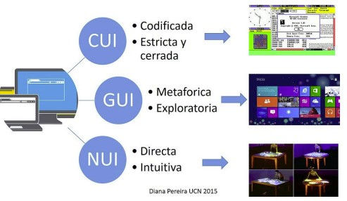
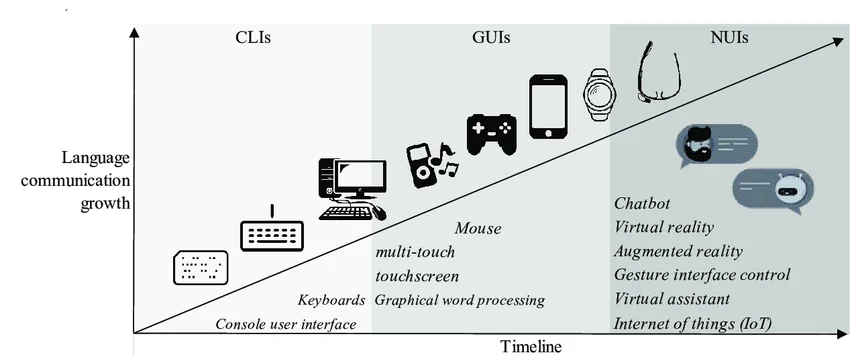
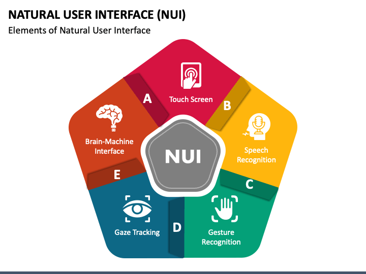
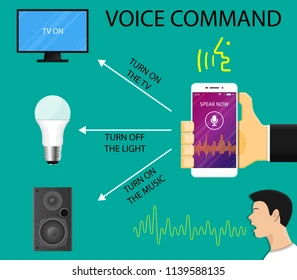
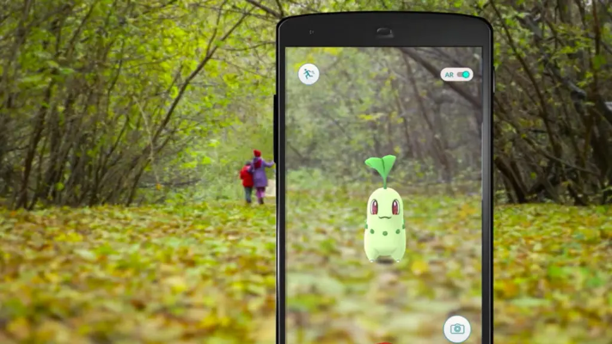
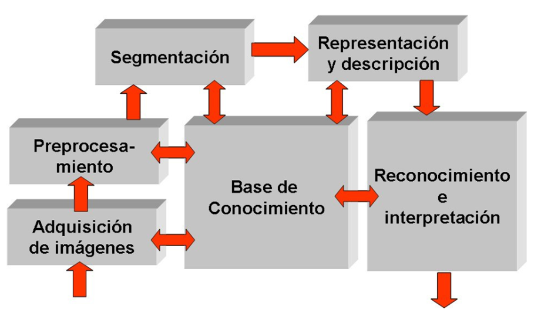

1. Introducción a interfaces naturales
Las interfaces naturales de usuario (NUI) representan un cambio de paradigma respecto a las GUI, permitiendo interactuar con los sistemas mediante formas de comunicación propias del comportamiento humano: hablar, señalar, tocar, mirar o moverse.
- Se busca mayor accesibilidad, eficiencia y naturalidad.
- Las NUI reducen la distancia entre la intención del usuario y la acción sobre el sistema.
- Se apoyan en tecnologías como visión artificial, reconocimiento de voz y aprendizaje automático.
1. Introducción a interfaces naturales
En la siguiente imagen, se muestra los distintos tipos de interfaces de usuario:

1.1 Evolución de la interacción persona-ordenador
La interacción persona-ordenador ha evolucionado desde entornos muy técnicos hasta interfaces gráficas y, más recientemente, hacia interfaces naturales que aprovechan las capacidades sensoriales del usuario.
- Años 50–60: interacción mediante tarjetas perforadas y consolas de texto.
- Posteriormente: aparición de GUI con ventanas, iconos, ratón y teclado.
- Con los dispositivos móviles: pantallas táctiles y sensores de movimiento.
- Estado actual: interacción mediante voz, gestos, visión, movimiento corporal y realidad aumentada.
1.1 Evolución de la interacción persona-ordenador
Desde las tarjetas perforadas hasta la interacción natural con el sistema:

1.2 Concepto de interfaz natural de usuario (NUI)
Una interfaz natural de usuario es aquella que permite interactuar con el sistema de forma similar a cómo lo haríamos con otra persona o con el entorno físico, minimizando la mediación de elementos artificiales como botones o menús convencionales.
- No requiere conocimientos técnicos avanzados para su uso.
- Utiliza tecnologías de reconocimiento del entorno, análisis del comportamiento y aprendizaje automático.
- Ejemplos: asistentes de voz, control por gestos, reconocimiento facial, aplicaciones de RA.
1.2 Concepto de interfaz natural de usuario (NUI)
Las NUI buscan que la interacción sea lo más fluida, intuitiva y directa posible, eliminando barreras entre el usuario

1.2 Requisitos de una NUI funcional
Para que una NUI sea funcional en entornos reales, debe cumplir una serie de requisitos que afectan tanto a la experiencia de usuario como al rendimiento del sistema.
- Intuitividad: el usuario comprende su uso sin manuales complejos.
- Inmediatez: respuesta en tiempo real o con latencia mínima.
- Adaptabilidad: se ajusta a capacidades, limitaciones y contexto del usuario.
- Multimodalidad: permite combinar varios canales (voz, gestos, visión, tacto, etc.).
1.3 Comparativa entre GUI y NUI
Las GUI y las NUI son modelos de interacción complementarios que pueden convivir en una misma aplicación, combinando elementos gráficos tradicionales con interacción natural.
- Entrada: GUI usa ratón y teclado; NUI usa voz, gestos, visión y movimiento.
- Curva de aprendizaje: en NUI se busca que sea baja o casi nula.
- Realismo: bajo en GUI frente a alto en NUI.
- Accesibilidad: las NUI amplían las posibilidades para distintos perfiles de usuario.
- Ejemplos: escritorios Windows/macOS (GUI) frente a asistentes de voz y RA (NUI).
1.3 Comparativa entre GUI y NUI
La siguiente imagen muestra una comparativa entre CLI, GUI y NUI, destacando sus diferencias en términos de interacción, experiencia de usuario y casos de uso típicos:

2. Definición y tipos de interfaces naturales
El concepto de interfaz natural de usuario abarca diversas modalidades de interacción que utilizan canales de comunicación humanos como la voz, los gestos o la percepción visual del entorno.
- Interfaces basadas en voz.
- Interfaces basadas en gestos.
- Interfaces basadas en visión por computador.
- Interfaces de realidad aumentada (RA).
2.1 Interfaces basadas en voz
Las interfaces por voz permiten al usuario comunicarse con el sistema mediante lenguaje hablado, utilizando técnicas de procesamiento del lenguaje natural (NLP) y aprendizaje automático.
- Aplicaciones: asistentes virtuales, control por voz en vehículos, dictado de texto, atención telefónica automatizada.
- Componentes: reconocimiento de voz, interpretación semántica e integración con síntesis de voz (TTS).
- Ventajas: interacción sin manos ni vista, gran utilidad en accesibilidad.
- Desventajas: dependencia de entornos silenciosos y dificultades con acentos o modismos.
2.1 Interfaces basadas en voz
Un ejemplo de interfaz por voz es el asistente virtual, que combina reconocimiento de voz, NLP y TTS para ofrecer una interacción fluida y natural con el usuario, permitiendo realizar tareas, responder preguntas o controlar dispositivos mediante comandos hablados.

2.2 Interfaces basadas en gestos
Estas interfaces permiten controlar un sistema mediante movimientos corporales, especialmente de manos, brazos, cabeza o cuerpo completo, interpretados a partir de cámaras o sensores de profundidad.
- Ejemplos: control de videojuegos con Kinect, navegación sin contacto en quirófanos, instalaciones interactivas.
- Tipos de gestos: estáticos, dinámicos y combinados (posición + trayectoria).
- Tecnologías: sensores de profundidad (Kinect, RealSense) y visión por computador (OpenCV, MediaPipe).
- Factores clave: iluminación, distancia, calibración y definición de gestos reconocibles.
2.2 Interfaces basadas en gestos
En la siguiente imagen vemos algunos ejemplos de interfaces por gestos, desde el control de videojuegos con Kinect hasta aplicaciones de RA que permiten manipular objetos virtuales con las manos:

2.3 Interfaces basadas en visión por computador
Las interfaces basadas en visión por computador capturan, analizan y procesan imágenes o vídeo en tiempo real para extraer información del entorno o del usuario, habilitando interacciones basadas en reconocimiento visual.
- Aplicaciones: desbloqueo facial en móviles, seguimiento ocular, control de accesos.
- Tecnologías: OpenCV, TensorFlow con redes neuronales, MediaPipe para manos, rostro y postura.
- Retos: alta carga computacional en tiempo real y necesidad de datasets específicos de entrenamiento.
2.3 Interfaces basadas en visión por computador
Ejemplo de MediaPipe para detección de manos en tiempo real, que permite reconocer la posición y movimiento de las manos para habilitar interacciones gestuales sin necesidad de hardware especializado:

2.4 Interfaces de realidad aumentada (RA)
La realidad aumentada (RA) superpone información virtual sobre la realidad física en tiempo real, de modo que el usuario percibe el entorno enriquecido con elementos gráficos interactivos.
- Ejemplos: IKEA Place, Pokémon GO, aplicaciones educativas y de soporte a mantenimiento.
- Tecnologías: ARCore, ARKit, Vuforia y motores de videojuegos como Unity.
- Ventajas: experiencia inmersiva y contextual; limitaciones: requisitos de hardware y condiciones de entorno.
2.4 Interfaces de realidad aumentada (RA)
Ejemplo de RA del videjuego Pokémon GO, que superpone criaturas virtuales en el entorno real a través de la cámara del dispositivo móvil, permitiendo a los usuarios interactuar con ellas mediante movimientos y gestos:

3. Ámbitos de aplicación de las NUI
Las interfaces naturales de usuario se integran progresivamente en distintos sectores, aportando experiencias más intuitivas, inclusivas y eficientes en escenarios de consumo y profesionales.
- Aplicaciones móviles.
- Accesibilidad digital.
- Videojuegos y entornos inmersivos.
- Automatización del hogar y entornos industriales.
3.1 Aplicaciones móviles
Los dispositivos móviles son uno de los principales impulsores de las NUI, al integrar cámara, micrófono, pantalla táctil y sensores de movimiento en un único dispositivo.
- Asistentes por voz integrados en smartphones.
- Reconocimiento facial para desbloqueo.
- Aplicaciones de RA como IKEA Place o Google Lens.
- Juegos que utilizan acelerómetro y giroscopio para el control.
3.2 Accesibilidad digital
En el ámbito de la accesibilidad, las NUI permiten sustituir, ampliar o complementar formas tradicionales de interacción, promoviendo la inclusión digital de personas con diversidad funcional.
- Control por voz para personas con movilidad reducida.
- Seguimiento ocular (eye-tracking) para quienes no pueden usar ratón o teclado.
- Reconocimiento de gestos faciales o corporales como alternativa al habla.
- Navegación háptica mediante vibraciones o señales sonoras.
- Ejemplo: proyecto “Look to Speak” de Google.
3.3 Videojuegos y entornos inmersivos
El sector de los videojuegos ha sido pionero en explorar interfaces naturales, buscando experiencias de usuario más inmersivas y dinámicas que trasciendan el mando o el teclado tradicionales.
- Tecnologías: reconocimiento de movimiento (Kinect, PlayStation Move), RA (ARKit, ARCore, Vuforia), realidad virtual.
- Aplicaciones: juegos de baile y ejercicio, escape rooms virtuales, juegos de RA.
- Ventajas: mayor implicación del jugador y potencial educativo.
- Retos: coste del hardware, calibración frecuente y posible fatiga física.
3.4 Automatización del hogar y entornos industriales
En domótica e industria 4.0, las NUI facilitan el control de sistemas complejos mediante voz, gestos y visión artificial, mejorando la ergonomía y la eficiencia de los procesos.
- Hogar: control de luces, temperatura y electrodomésticos con asistentes de voz, acceso mediante reconocimiento facial.
- Industria: supervisión de maquinaria con interfaces gestuales, RA para mantenimiento y control de calidad.
- Ventajas: reducción de tiempos de intervención y mayor precisión en procesos automatizados.
4. Detección de movimiento y gestos corporales
El reconocimiento del movimiento y de los gestos corporales permite a los usuarios interactuar con sistemas mediante posturas, trayectorias o acciones capturadas por cámaras o sensores especializados, sin contacto físico directo.
- Es un componente clave de las NUI.
- Está estrechamente ligado a la visión artificial y al aprendizaje automático.
- Se usa en videojuegos, accesibilidad, automatización y entornos interactivos.
4.1 Principios de visión artificial aplicada a gestos
La VA permite a un sistema identificar partes del cuerpo, movimiento y patrones como gestos.
- Proceso generalpara detectar los gestos
- Captura de imagen o vídeo.
- Preprocesamiento (filtrado, normalización).
- Detección de características (puntos clave, contornos).
- Seguimiento de movimiento.
- Clasificación del gesto mediante modelos entrenados.
- Tipos de gestos: estáticos, dinámicos y combinados (posición + trayectoria).
- Problemas habituales: cambios de iluminación, ambigüedad gestual y calibración.
4.1 Principios de visión artificial aplicada a gestos
Pasos para detectar gestos con visión artificial:

4.2 Librerías especializadas: OpenCV, Kinect SDK y MediaPipe
Diferentes librerías y frameworks facilitan la implementación de sistemas de detección gestual en entornos educativos y profesionales.
- OpenCV: biblioteca de código abierto para procesamiento de imágenes y vídeo.
- Kinect SDK: kit de Microsoft para sensores Kinect con captura de profundidad y esqueleto 3D.
- MediaPipe: framework de Google con modelos preentrenados para manos, rostro y postura en tiempo real.
4.3 Comparativa de capacidades y casos de uso
Cada librería presenta un equilibrio distinto entre dificultad de uso, requisitos de hardware y capacidades, por lo que su elección depende del tipo de proyecto y del contexto.
| Librería | Facilidad de uso | Requisitos de hardware | Capacidades principales | Casos de uso típicos |
|---|---|---|---|---|
| OpenCV | Media | Bajo a medio (cámara estándar) | Procesamiento de imágenes, detección de contornos, seguimiento de objetos | Proyectos educativos, prototipos de visión artificial, análisis de vídeo |
| Kinect SDK | Baja (requiere hardware específico) | Alto (sensor Kinect) | Captura de profundidad, seguimiento esquelético 3D, reconocimiento de gestos complejos | Videojuegos, instalaciones interactivas, aplicaciones de rehabilitación física |
| MediaPipe | Alta (modelos preentrenados y fácil integración) | Bajo a medio (cámara estándar) | Detección de manos, rostro y postura en tiempo real con modelos optimizados | Aplicaciones móviles, prototipos rápidos, proyectos educativos y experimentales |
4.4 Ejemplo básico de código con MediaPipe
Un ejemplo típico en Python con MediaPipe consiste en detectar manos usando la webcam, dibujando los puntos clave y sus conexiones sobre el vídeo para visualizar la detección en tiempo real.
import cv2
import mediapipe as mp
cap = cv2.VideoCapture(0)
hands = mp.solutions.hands.Hands()
draw = mp.solutions.drawing\_utils
while True:
ret, frame = cap.read()
if not ret:
break
frame = cv2.flip(frame, 1)
rgb = cv2.cvtColor(frame, cv2.COLOR_BGR2RGB)
results = hands.process(rgb)
if results.multi_hand_landmarks:
for hand_landmarks in results.multi_hand_landmarks:
draw.draw_landmarks(frame, hand_landmarks, mp.solutions.hands.HAND_CONNECTIONS)
cv2.imshow("Detección de manos", frame)
if cv2.waitKey(1) == 27: # ESC
break
cap.release()
cv2.destroyAllWindows()5. Implementación básica de interacción gestual
Con los fundamentos y tecnologías de reconocimiento de gestos es posible diseñar interacciones simples controladas con el cuerpo, sin contacto físico con el dispositivo, integrando NUI en aplicaciones reales.
- Mover el cursor con la mano.
- Disparar eventos mediante gestos.
- Controlar el scroll vertical con movimientos.
- Combinar MediaPipe, OpenCV o Kinect con bibliotecas de eventos del sistema operativo.
5.1 Mover el cursor con la mano
Una aplicación directa del seguimiento de manos es controlar el cursor del ratón obteniendo las coordenadas de un punto de referencia (por ejemplo, la punta del dedo índice) y mapeándolas al tamaño de la pantalla.
- Capturar vídeo de la cámara en tiempo real.
- Detectar la posición del dedo índice con MediaPipe.
- Normalizar coordenadas al tamaño de pantalla.
- Mover el cursor con una biblioteca como PyAutoGUI.
import cv2
import mediapipe as mp
import pyautogui
cap = cv2.VideoCapture(0)
hands = mp.solutions.hands.Hands()
screen\_w, screen\_h = pyautogui.size()
while True:
ret, frame = cap.read()
if not ret:
break
frame = cv2.flip(frame, 1)
rgb = cv2.cvtColor(frame, cv2.COLOR_BGR2RGB)
results = hands.process(rgb)
if results.multi_hand_landmarks:
for hand in results.multi_hand_landmarks:
x = int(hand.landmark[8].x * screen_w)
y = int(hand.landmark[8].y * screen_h)
pyautogui.moveTo(x, y)
cv2.imshow("Cursor con la mano", frame)
if cv2.waitKey(1) == 27: # ESC
break
cap.release()
cv2.destroyAllWindows()5.2 Disparar eventos mediante gestos
Además de mover el cursor, es posible activar acciones concretas mediante la detección de gestos definidos, asociando cada gesto con un evento de la interfaz o del sistema.
- Ejemplos: cerrar puño para cerrar ventana, gesto de pinza para clic, mano abierta para iniciar una acción.
- Flujo: identificar puntos clave → calcular distancias/relaciones → definir condiciones → disparar el evento.
- Es recomendable usar umbrales y filtros para evitar falsos positivos.
5.3 Control de scroll con movimientos
El scroll vertical en páginas web, documentos o menús puede controlarse mediante gestos, utilizando el movimiento de la mano como entrada natural para desplazar contenido.
- Movimiento suave hacia arriba o abajo → scroll continuo.
- Gestos verticales definidos → scroll por bloques.
- Número de dedos visibles → velocidad de desplazamiento.
- Recomendaciones: establecer umbrales mínimos y limitar la frecuencia de eventos.
6. Realidad aumentada
La realidad aumentada (RA) es una tecnología clave dentro del desarrollo de interfaces naturales, ya que permite al usuario interactuar con objetos virtuales integrados en el entorno físico en tiempo real.
- Complementa la realidad física, a diferencia de la realidad virtual que la sustituye.
- Integra contenidos visuales, sonoros o táctiles sobre la escena capturada por la cámara.
- Tiene aplicaciones en educación, turismo, industria y entretenimiento.
6.1 Fundamentos y definición de RA
La RA se define como la tecnología que superpone contenidos virtuales sobre una imagen del mundo real, manteniendo una sincronización espacial y temporal con el entorno para enriquecer la percepción del usuario.
- Componentes esenciales: cámara, sistema de localización (GPS, sensores), unidad de procesamiento y motor gráfico.
- Tipos: RA basada en marcadores, basada en localización, sin marcadores (markerless) y con dispositivos especializados.
- Limitaciones: alta demanda de recursos, dependencia de condiciones de luz y calidad de sensores.
6.2 Plataformas y SDKs: ARCore y Vuforia
Para desarrollar aplicaciones de RA es habitual utilizar SDKs que facilitan el reconocimiento del entorno, la gestión de objetos virtuales y su integración con aplicaciones móviles o con motores como Unity.
- ARCore: orientado a Android y Unity, especializado en RA sin marcadores (markerless).
- Vuforia: multiplataforma (Android, iOS, Unity), compatible con marcadores, superficies, texto e imágenes.
- Ambos permiten posicionar y anclar objetos 3D, texto e incluso vídeo sobre el entorno físico.
6.3 Superposición de elementos gráficos
Una tarea central en RA es posicionar elementos virtuales alineados con la imagen real capturada por la cámara, de forma estable y coherente para el usuario.
- Tipos de elementos: imágenes, modelos 3D, etiquetas de texto, animaciones.
- Principios: anclaje a referencias estables, adaptación de escala/perspectiva y baja latencia.
- Ejemplo: al apuntar a una ilustración impresa de un corazón humano, se muestra un modelo 3D interactivo.
6.4 Prototipo simple de aplicación con AR
Un prototipo típico en Unity utilizando Vuforia consiste en mostrar un modelo 3D al enfocar con la cámara un marcador predefinido.
- Instalar Unity con soporte móvil e integrar Vuforia.
- Configurar una escena con ARCamera e ImageTarget asociado a un marcador.
- Importar un modelo 3D, vincularlo al marcador y compilar la aplicación.
- Al enfocar el marcador, el modelo 3D se superpone y se observa desde distintas perspectivas.
Actividades de evaluación
Las actividades propuestas permiten comprobar el grado de comprensión de los conceptos de la UT3 y su relación con los criterios de evaluación del resultado de aprendizaje RA2.
- Actividad 1: relacionar tipos de interfaces naturales con su función principal.
- Actividad 2: clasificar ejemplos según el ámbito de aplicación (móviles, accesibilidad, videojuegos, industria).
- Actividad 3: ordenar los pasos necesarios para detectar un gesto corporal con visión artificial.
- Actividad 4: completar una tabla indicando qué tipo de interacción permite cada acción (voz, gestos, visión, RA).